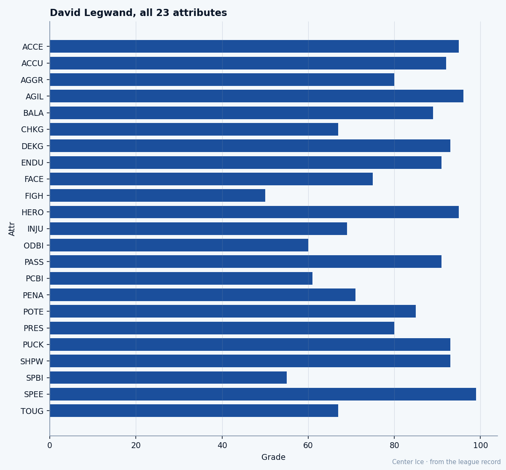

The Contract Year: David Legwand plays for July
The 2nd pick of 1998 is 25, on $8.37M with 1 year left, and the Bureau's ceiling for him sits 3 grades below his base
 Tomáš VránaProfile writer · The Sweater
Tomáš VránaProfile writer · The Sweater David Legwand89 is 25 years old and the Bureau already thinks he is finished growing. The Book lists his base at 88, his potential at 85. Three grades below the man he is right now. The Development Index has him at 90 today, which makes the gap wider still: the Index says he is 5 above the number the Bureau believes he will ever reach.
David Legwand89 is 25 years old and the Bureau already thinks he is finished growing. The Book lists his base at 88, his potential at 85. Three grades below the man he is right now. The Development Index has him at 90 today, which makes the gap wider still: the Index says he is 5 above the number the Bureau believes he will ever reach.
He has 1 year left on a $8.37M contract. His morale reads 97. He is playing the best hockey of his life just as the Bureau has decided there is no more coming. Nashville has to put a price on that.
The speed and the pace
The 2004-05 season opened with Legwand at the top of a column almost no one expected to lead. 23 points in 13 games, 10 goals and 13 assists, 21.8 minutes a night. His pace of 145 points per 82 is the second-highest mark in the league, behind only  Markus Naslund91's 152. The player who sits 3rd on the pace list,
Markus Naslund91's 152. The player who sits 3rd on the pace list,  Jarome Iginla92, is at 129.
Jarome Iginla92, is at 129.
The engine is a pair of grades that sit at the very top of the scale. Speed 99, Agility 96, Acceleration 95. Legwand crosses the blue line faster than anyone the Bureau has graded. His Deking and Puck Handling both read 93. When he has the puck in space at home, where  Nashville Predators is 4-0 this season and the crowd at Gaylord Entertainment Center stands on its feet for every rush, the man in front of him has no answer. Fighting 50, the lowest grade on his card, means nobody is going to put a body on him for it either.
Nashville Predators is 4-0 this season and the crowd at Gaylord Entertainment Center stands on its feet for every rush, the man in front of him has no answer. Fighting 50, the lowest grade on his card, means nobody is going to put a body on him for it either.
That split, 49 grades between his best attribute and his worst, is the widest I have found on any skater's card. The Bureau does not care about the split. It cares about the base of 88 and the potential of 85, and the question those two numbers raise about July.

The road to 2nd overall
Legwand grew up in Grosse Pointe, a suburb northeast of Detroit, and played for the Little Caesars at the Quebec International Pee-Wee Tournament in 1993 and 1994. He went to Grosse Pointe North High School. The Plymouth Whalers of the OHL drafted him and he became their player. In the season before the 1998 draft he scored 54 goals and 51 assists, 105 points, and won the Red Tilson Award as the most outstanding player in the league.
Nashville's general manager David Poile traded his first- and second-round picks to San Jose for the 2nd overall selection and the 85th pick. He took Legwand. The kid came to training camp and got mononucleosis. Poile sent him back to Plymouth.
What the room remembers is the mononucleosis. A 17-year-old who showed up at his first NHL camp too sick to play, who went back to junior, who came back the next fall and was told to put on weight after a growth spurt, who spent seven seasons building himself into the fastest center in the league without ever missing a beat.
On December 23, 2000, in a game against the  New York Rangers, Legwand became the first player in league history to score on a penalty shot in overtime. He was 20. He played for Team USA at the 2001 World Championship because Nashville did not make the playoffs that year.
New York Rangers, Legwand became the first player in league history to score on a penalty shot in overtime. He was 20. He played for Team USA at the 2001 World Championship because Nashville did not make the playoffs that year.
What the room says
 Tomas Vokoun91 [1044] is the best teammate Legwand has tonight, a goaltender the Book grades at 92.
Tomas Vokoun91 [1044] is the best teammate Legwand has tonight, a goaltender the Book grades at 92.  Martin Erat85 [266] reads 86 on the left wing.
Martin Erat85 [266] reads 86 on the left wing.  Scott Walker84 [1051] is 85 on the right. That is a line built around a center who can beat any defense on the planet with his first three strides.
Scott Walker84 [1051] is 85 on the right. That is a line built around a center who can beat any defense on the planet with his first three strides.
The record has Legwand with Nashville from the day it opened, before December 1, 2004. He has been there since Poile made the trade in 1998, eight seasons in the same locker room.
He told the room what it already knows: he is having a season. He does not need to say it in numbers. The 23 points in 13 games say it. The way he crosses the line with the puck on his tape, head up, already three strides ahead of the man trying to pin him against the boards, says it. A man with Speed 99 and Fighting 50 is telling you something about how he wants the game to work. He goes around you.
The math Nashville has to do
$8.37M with 1 year left. He is 25. The pace is 145. The base is 88. The potential is 85.
The Bureau's potential number is a ceiling. It says: stop looking for more. The man you have is the man you are keeping. If Nashville re-signs him, they are paying for the 88 they see today, maybe the 90 the Index says is in front of them right now, and betting that the 85 is wrong, or irrelevant, or that a player who beats the ceiling once can do it again.
The alternative is losing him in 256 days when free agency closes. A player on $8.37M with a pace of 145 and a base of 88 does not leave Nashville for a lesser number. Somebody else pays the money.
The Predators are 5-3-2, third in the Central, 4-0 at home. They are in a playoff spot. Legwand's hip, the one that cost him time between April 4 and April 12 last spring, is closed and done. His body is fine. His morale is 97.
The only number that does not fit is 85. The ceiling the Bureau set for a 25-year-old who has never been healthier, never been faster, never been better. Nashville looks at that number and decides what it is worth in July. Legwand looks at the same number and skates past it every night.